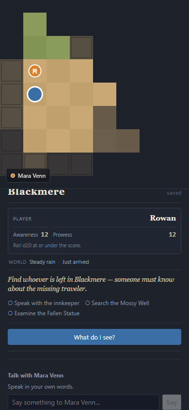

{kind=link}
Grounded characters
Mara and Edda have different knowledge, memories, goals, and physical presence. Unsupported concrete dialogue claims are checked before display.
A persistent, inspectable AI roleplaying experiment
Blackmere lets a language model interpret, narrate, and perform characters—but a deterministic engine owns facts, movement, time, chance, and consequences.
Latest verified local build
Updated July 20, 2026

What works now
Mara and Edda have different knowledge, memories, goals, and physical presence. Unsupported concrete dialogue claims are checked before display.
Investigations and hostile challenges use recorded dice, authored outcomes, and fail-forward consequences. Undo cannot be used to reroll revealed chance.
Movement, fog, time, weather, NPC schedules, discovered facts, and the Mire Hound's state all come from one persistent world model.
The active story, committed commands, events, before/after state, and resolution ledger can be inspected without maintaining a second version of truth.
Recorded live dialogue
Bran
Good afternoon. I'm Bran. What happened to the missing traveler?
Mara
Don't know. Went out one night and didn't come back. That's all anyone can tell you.
Bran
You don't have to tell me. But you seem frightened.
Mara
Frightened's a strong word. Careful, maybe. This place has had enough trouble without adding guesswork to it.
— flat gaze, arms crossed
The governing pipeline
Recent progress
Honest boundary
Blackmere is an authored vertical slice, not a complete RPG platform. The hostile scene is not a general combat system; the map is functional rather than finished art; and the playable development build remains local until authentication, rate limits, cost controls, and abuse protection are in place.